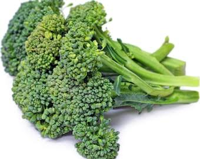

📖 Descrição
O brócolis calabresa (Brassica oleracea var. italica) é uma hortaliça rica em vitaminas, minerais e antioxidantes. Produz pequenas inflorescências verdes, muito apreciadas na culinária por seu sabor suave e alto valor nutricional.
🌱 Cuidados
- Prefere solo fértil, rico em matéria orgânica e bem drenado.
- Regar regularmente, mantendo o solo úmido sem encharcar.
- Cultivar em local com boa incidência de sol.
- Adubar periodicamente para favorecer o desenvolvimento das inflorescências.
- Retirar folhas secas e manter a área livre de plantas invasoras.
🌎 Origem
Originário da região do Mediterrâneo, o brócolis foi aperfeiçoado na Itália e hoje é cultivado em diversas partes do mundo.
🐝 Atrai quais polinizadores?
Quando entra em floração, suas flores atraem abelhas, borboletas e outros insetos polinizadores importantes para o equilíbrio da horta.
🍽️ Parte comestível
Inflorescências (flores), talos e folhas jovens.
💚 Benefícios para a saúde
- Rico em vitaminas A, C, K e do complexo B.
- Fonte de fibras, cálcio, ferro e potássio.
- Possui ação antioxidante.
- Contribui para a saúde dos ossos.
- Fortalece o sistema imunológico.
🌼 Curiosidade
O brócolis pertence à mesma família da couve, da couve-flor e do repolho. É considerado um dos alimentos mais nutritivos do mundo devido à grande quantidade de vitaminas, minerais e compostos antioxidantes.
🌍 Importância para o meio ambiente
Suas flores servem de alimento para diversos polinizadores, contribuindo para a biodiversidade da horta escolar e para o equilíbrio dos ecossistemas.
🌾 Época de plantio
O cultivo apresenta melhor desenvolvimento em temperaturas amenas, principalmente durante o outono e o inverno, mas pode ser realizado em outras épocas com os devidos cuidados.
📱 Acesse esta página pelo QR Code

Escaneie o QR Code para acessar esta página pelo celular.